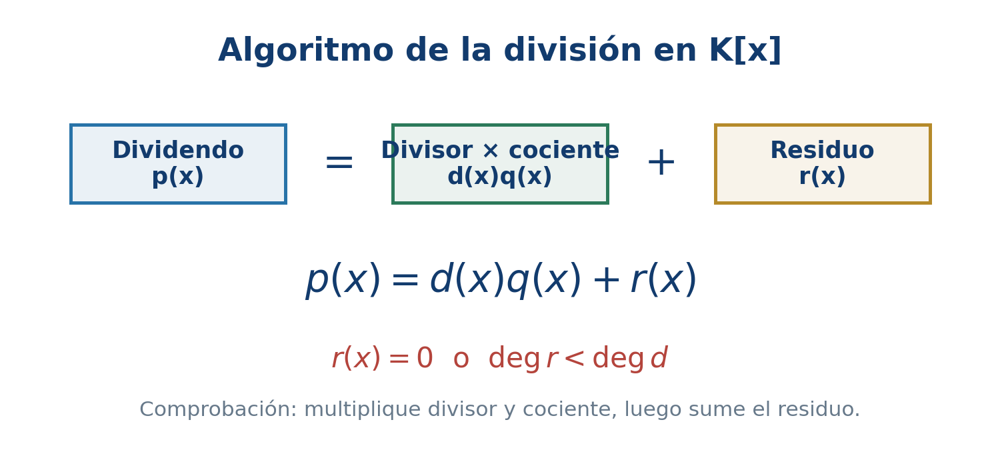
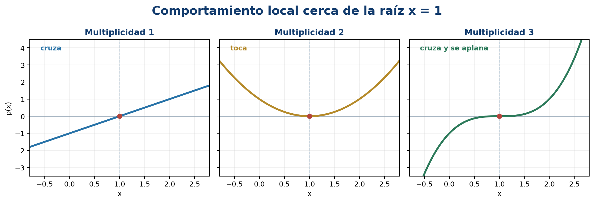
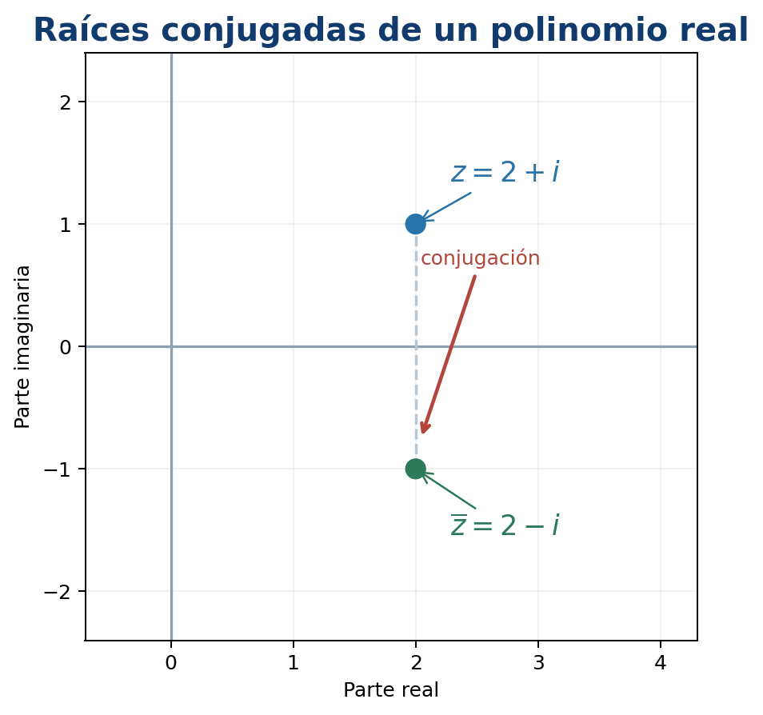
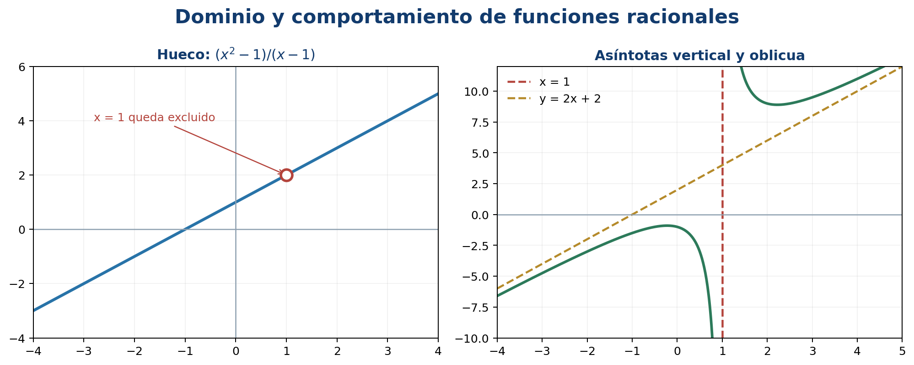

4 Polinomios
Este capítulo desarrolla la Unidad 4 del programa oficial de Álgebra Superior de la Facultad de Ciencias de la UASLP (Universidad Autónoma de San Luis Potosí, Facultad de Ciencias 2011). El propósito es pasar de las operaciones formales con polinomios a la comprensión de sus raíces, su factorización y las funciones racionales.
Introducción
Los polinomios aparecen al modelar trayectorias, señales, costos, aproximaciones y ecuaciones. Tienen una doble naturaleza: son expresiones algebraicas que pueden sumarse y multiplicarse, y también funciones cuyos ceros se observan en una gráfica. La división conecta ambas perspectivas: una raíz produce un factor y un factor produce una raíz.
Objetivos del capítulo
Al terminar el capítulo, el lector podrá:
- identificar coeficientes, grado y coeficiente principal;
- efectuar operaciones y justificar sus propiedades;
- aplicar el algoritmo de la división en \(K[x]\);
- relacionar raíces, factores y residuos;
- usar división sintética y detectar raíces múltiples;
- explicar el alcance del teorema fundamental del álgebra;
- factorizar sobre \(\mathbb C\) y sobre \(\mathbb R\);
- analizar dominio, ceros, discontinuidades y asíntotas de funciones racionales;
- descomponer fracciones racionales en fracciones parciales.
4.1 Definición de polinomio
Sea \(K\) un campo, normalmente \(\mathbb Q\), \(\mathbb R\) o \(\mathbb C\).
Un polinomio en la variable \(x\) con coeficientes en \(K\) es una expresión
\[ p(x)=a_0+a_1x+\cdots+a_nx^n, \qquad a_j\in K, \]
en la que solo un número finito de coeficientes es distinto de cero. El conjunto de todos ellos se denota por \(K[x]\).
Si \(p\ne0\) y \(a_n\ne0\), el grado de \(p\) es \(\deg p=n\), \(a_n\) es el coeficiente principal y \(a_0\) el término independiente. Un polinomio es mónico cuando su coeficiente principal es \(1\). Por convenio, al polinomio cero no se le asigna un grado ordinario; a veces se escribe \(\deg 0=-\infty\) para conservar algunas fórmulas.
En
\[ p(x)=-2x^5+3x^2-7 \]
los coeficientes omitidos son cero, el grado es \(5\), el coeficiente principal es \(-2\) y el término independiente es \(-7\).
Igualdad y evaluación
Dos polinomios son iguales si tienen el mismo coeficiente en cada potencia de \(x\). Por ejemplo,
\[ (x+1)^2=x^2+2x+1 \]
como polinomios, porque al desarrollar coinciden todos sus coeficientes.
La evaluación en \(c\in K\) es
\[ p(c)=a_0+a_1c+\cdots+a_nc^n. \]
No debe confundirse el polinomio formal con la función que induce. Sobre campos infinitos, como \(\mathbb R\) y \(\mathbb C\), dos polinomios que dan el mismo valor para todo \(x\) tienen los mismos coeficientes. Sobre un campo finito pueden existir polinomios distintos que representan la misma función.
4.2 Aritmética y propiedades de los polinomios
Para sumar polinomios se suman coeficientes de términos del mismo grado. Para multiplicarlos se aplica la distributividad y se agrupan potencias iguales.
Sean
\[ p(x)=\sum_{j=0}^{m}a_jx^j, \qquad q(x)=\sum_{k=0}^{n}b_kx^k. \]
Entonces
\[ p(x)+q(x)=\sum_{r\ge0}(a_r+b_r)x^r \]
y
\[ p(x)q(x)=\sum_{r=0}^{m+n} \left(\sum_{j+k=r}a_jb_k\right)x^r. \]
La suma interior es una convolución de las sucesiones de coeficientes.
Si \(p(x)=2x^2-x+3\) y \(q(x)=x^2+4x-1\), entonces
\[ p+q=3x^2+3x+2, \]
\[ pq=2x^4+7x^3-3x^2+13x-3. \]
Propiedades de grado
Para polinomios no nulos sobre un campo:
\[ \deg(pq)=\deg p+\deg q, \]
\[ \deg(p+q)\leq\max\{\deg p,\deg q\}. \]
En la suma puede disminuir el grado si se cancelan los términos principales. Por ejemplo, \((x^3+1)+(-x^3+x)=x+1\).
Con la suma y el producto, \(K[x]\) es un anillo conmutativo con identidad. No es un campo: un polinomio no constante no tiene inverso polinomial. Sus unidades son precisamente las constantes no nulas.
4.3 Divisibilidad
Dados \(p,d\in K[x]\), con \(d\ne0\), se dice que \(d\) divide a \(p\), y se escribe \(d\mid p\), si existe \(q\in K[x]\) tal que
\[ p=dq. \]
El resultado fundamental es análogo al algoritmo de la división de enteros.
Para \(p,d\in K[x]\), con \(d\ne0\), existen polinomios únicos \(q\) y \(r\) tales que
\[ p=dq+r, \qquad r=0\quad\text{o}\quad\deg r<\deg d. \]
El polinomio \(q\) es el cociente y \(r\) el residuo.
Por qué termina el algoritmo
Si \(\deg p\geq\deg d\), se elige un monomio que cancele el término principal de \(p\). Después de restar ese múltiplo de \(d\), el grado disminuye. Como los grados son enteros no negativos, el proceso debe terminar.
Ejemplo de división larga
Dividamos
\[ p(x)=2x^4-3x^3+4x-5 \]
entre \(d(x)=x^2-x+1\). El resultado es
\[ q(x)=2x^2-x-3, \qquad r(x)=2x-2. \]
La comprobación decisiva es
\[ 2x^4-3x^3+4x-5 =(x^2-x+1)(2x^2-x-3)+(2x-2). \]

4.4 Definición de raíz de un polinomio
Un número \(\alpha\in K\) es raíz o cero de \(p\in K[x]\) si
\[ p(\alpha)=0. \]
La conexión entre evaluación y divisibilidad es inmediata al dividir entre \(x-\alpha\).
\(\alpha\) es raíz de \(p\) si y solo si \(x-\alpha\) divide a \(p\).
En efecto, por el algoritmo de la división,
\[ p(x)=(x-\alpha)q(x)+r, \]
donde \(r\) es constante. Al evaluar en \(x=\alpha\) se obtiene \(r=p(\alpha)\). Por tanto, \(p(\alpha)=0\) exactamente cuando el residuo es cero.
Número máximo de raíces
Un polinomio no nulo de grado \(n\) tiene como máximo \(n\) raíces distintas en un campo. La prueba es inductiva: cada raíz extrae un factor lineal y reduce el grado en uno.
Que un polinomio de grado \(n\) tenga a lo sumo \(n\) raíces no afirma que tenga \(n\) raíces reales. Por ejemplo, \(x^2+1\) no tiene raíces en \(\mathbb R\), aunque sí tiene dos en \(\mathbb C\).
4.5 Teorema del residuo y división sintética
El residuo de dividir \(p(x)\) entre \(x-c\) es \(p(c)\).
Esto permite evaluar un polinomio sin completar toda la división. La división sintética organiza las operaciones solo con coeficientes.
Ejemplo resuelto
Para dividir
\[ p(x)=2x^3-3x^2-11x+6 \]
entre \(x-3\), se usan los coeficientes \(2,-3,-11,6\):
\[ \begin{array}{r|rrrr} 3&2&-3&-11&6\\ & &6&9&-6\\ \hline &2&3&-2&0 \end{array} \]
El cociente es \(2x^2+3x-2\) y el residuo es \(0\). En consecuencia,
\[ p(x)=(x-3)(2x^2+3x-2). \]
En \(x^4-5x^2+4\) deben escribirse los coeficientes \(1,0,-5,0,4\). Omitir los ceros desplaza las columnas y cambia el resultado.
Evaluación de Horner
La misma organización conduce a
\[ p(c)=(((a_nc+a_{n-1})c+a_{n-2})c+\cdots)c+a_0. \]
El esquema de Horner necesita \(n\) multiplicaciones y \(n\) sumas, y evita calcular por separado todas las potencias de \(c\).
4.6 Obtención de raíces múltiples
Una raíz \(\alpha\) tiene multiplicidad \(m\geq1\) si
\[ p(x)=(x-\alpha)^m q(x), \qquad q(\alpha)\ne0. \]
La raíz es simple cuando \(m=1\), doble cuando \(m=2\), triple cuando \(m=3\), etcétera.
La derivada permite reconocer multiplicidades:
\[ \alpha\text{ tiene multiplicidad al menos }m \iff p(\alpha)=p'(\alpha)=\cdots=p^{(m-1)}(\alpha)=0. \]
Si además \(p^{(m)}(\alpha)\ne0\), la multiplicidad es exactamente \(m\).
Ejemplo
Sea
\[ p(x)=(x-1)^3(x+2)^2. \]
La raíz \(1\) tiene multiplicidad \(3\) y la raíz \(-2\) multiplicidad \(2\). En la gráfica, una raíz de multiplicidad par toca el eje y regresa; una raíz de multiplicidad impar lo cruza. Para multiplicidades impares mayores que uno, el cruce se aplana.

Si \(p(\alpha)=0\), divida entre \(x-\alpha\). Vuelva a evaluar el cociente en \(\alpha\) y repita. El número de divisiones exactas es la multiplicidad.
4.7 Teorema fundamental del álgebra
Todo polinomio no constante con coeficientes complejos posee al menos una raíz compleja.
Aunque el enunciado garantiza una raíz, al dividir por su factor lineal y repetir se obtiene la forma completa:
\[ p(x)=a_n\prod_{j=1}^{n}(x-\alpha_j), \]
donde las raíces se cuentan con multiplicidad.
Alcance del teorema
- Garantiza existencia, pero no proporciona por sí solo un algoritmo práctico para calcular las raíces.
- El campo \(\mathbb C\) es algebraicamente cerrado.
- Un polinomio real puede no factorizarse completamente en factores lineales reales, pero sí en factores lineales complejos.
- Las fórmulas generales por radicales existen hasta grado cuatro; para grado cinco o mayor no existe una fórmula por radicales válida para todos los polinomios.
El teorema fundamental del álgebra no dice que todas las raíces puedan escribirse con una fórmula elemental. La aproximación numérica será el tema del capítulo 5.
4.8 Descomposición de un polinomio en factores lineales
Si \(p\in\mathbb C[x]\) tiene grado \(n\geq1\), entonces
\[ p(x)=a_n(x-\alpha_1)^{m_1}\cdots(x-\alpha_s)^{m_s}, \]
donde \(\alpha_1,\ldots,\alpha_s\) son raíces distintas y
\[ m_1+\cdots+m_s=n. \]
Esta factorización es única salvo por el orden de los factores.
Ejemplo completo
Factoricemos
\[ p(x)=x^4-5x^2+4. \]
Al verlo como cuadrático en \(u=x^2\):
\[ u^2-5u+4=(u-1)(u-4). \]
Por tanto,
\[ p(x)=(x^2-1)(x^2-4) =(x-1)(x+1)(x-2)(x+2). \]
Las raíces son \(-2,-1,1,2\), todas simples.
Estrategia para coeficientes enteros
Para un polinomio
\[ a_nx^n+\cdots+a_0 \]
con coeficientes enteros, toda raíz racional reducida \(r/s\) satisface \(r\mid a_0\) y \(s\mid a_n\). Este teorema de la raíz racional produce candidatos; cada candidato debe evaluarse. No asegura que exista una raíz racional.
4.9 Propiedades de polinomios con coeficientes reales
Si \(p\) tiene coeficientes reales, la conjugación conmuta con la evaluación:
\[ p(\overline z)=\overline{p(z)}. \]
Por consiguiente, si \(p(z)=0\), entonces
\[ p(\overline z)=\overline{0}=0. \]
Las raíces complejas no reales de un polinomio con coeficientes reales aparecen en pares conjugados y con la misma multiplicidad.
El producto de los factores conjugados tiene coeficientes reales:
\[ (x-z)(x-\overline z) =x^2-2\operatorname{Re}(z)x+|z|^2. \]
Así, todo polinomio real se factoriza sobre \(\mathbb R\) como producto de factores lineales reales y factores cuadráticos irreducibles.
Ejemplo
Si \(2+i\) es raíz de un polinomio real, también lo es \(2-i\), y
\[ [x-(2+i)][x-(2-i)]=x^2-4x+5. \]

Relaciones de Viète
Para el polinomio mónico
\[ p(x)=x^n+a_{n-1}x^{n-1}+\cdots+a_0 =\prod_{j=1}^{n}(x-\alpha_j), \]
se cumple, contando multiplicidades,
\[ \sum_{j=1}^{n}\alpha_j=-a_{n-1}, \qquad \prod_{j=1}^{n}\alpha_j=(-1)^n a_0. \]
4.10 Funciones racionales
Una función racional es un cociente
\[ R(x)=\frac{p(x)}{q(x)}, \]
donde \(p,q\in K[x]\) y \(q\ne0\). Su dominio excluye los ceros de \(q\).
Antes de simplificar debe registrarse el dominio original. Por ejemplo,
\[ R(x)=\frac{x^2-1}{x-1}=x+1, \qquad x\ne1. \]
La gráfica es la recta \(y=x+1\) con un hueco en \((1,2)\). La simplificación algebraica no vuelve a incluir \(x=1\).
Ceros, polos y asíntotas
- Los ceros provienen de factores del numerador que no se cancelan.
- Los ceros del denominador no cancelados producen polos y, usualmente, asíntotas verticales.
- Si \(\deg p<\deg q\), la asíntota horizontal es \(y=0\).
- Si \(\deg p=\deg q\), la asíntota horizontal es el cociente de coeficientes principales.
- Si \(\deg p\geq\deg q\), la división polinomial separa una parte polinomial y una fracción propia.

Para
\[ R(x)=\frac{2x^2+1}{x-1}, \]
la división da
\[ R(x)=2x+2+\frac{3}{x-1}. \]
Tiene asíntota vertical \(x=1\) y asíntota oblicua \(y=2x+2\).
4.11 Fracciones parciales
La descomposición en fracciones parciales expresa una fracción racional propia como suma de términos simples. Es útil para integrar, resolver ecuaciones diferenciales y transformar señales.
Primero, si \(\deg p\geq\deg q\), se efectúa la división. Después se factoriza el denominador.
Factores lineales distintos
Si
\[ \frac{p(x)}{(x-a)(x-b)} \]
es propia y \(a\ne b\), se propone
\[ \frac{A}{x-a}+\frac{B}{x-b}. \]
Por ejemplo,
\[ \frac{5x+1}{(x-1)(x+2)} =\frac{2}{x-1}+\frac{3}{x+2}. \]
La comprobación reúne el lado derecho sobre el denominador común.
Factores lineales repetidos
Para \((x-a)^m\) se requieren todos los términos
\[ \frac{A_1}{x-a}+\frac{A_2}{(x-a)^2} +\cdots+\frac{A_m}{(x-a)^m}. \]
Factores cuadráticos irreducibles
Por cada potencia \((x^2+bx+c)^m\) irreducible sobre \(\mathbb R\) se incluyen numeradores lineales:
\[ \frac{A_1x+B_1}{x^2+bx+c} +\cdots+ \frac{A_mx+B_m}{(x^2+bx+c)^m}. \]
La forma de descomposición para
\[ \frac{x^2+1}{(x-1)^2(x^2+4)} \]
es
\[ \frac{A}{x-1}+\frac{B}{(x-1)^2} +\frac{Cx+D}{x^2+4}. \]
Los coeficientes se obtienen al multiplicar por el denominador común y comparar coeficientes o evaluar valores convenientes.
Síntesis del capítulo
- \(K[x]\) es un anillo de expresiones con un número finito de coeficientes no nulos.
- El algoritmo de la división escribe \(p=dq+r\) con \(\deg r<\deg d\).
- \(p(c)\) es el residuo de dividir por \(x-c\).
- \(c\) es raíz si y solo si \(x-c\) es factor.
- La multiplicidad cuenta cuántas veces aparece el factor lineal.
- Todo polinomio complejo no constante se descompone en factores lineales.
- En polinomios reales, las raíces no reales aparecen en pares conjugados.
- Una función racional conserva las exclusiones de su denominador original.
- Las fracciones parciales dependen de la factorización y multiplicidad del denominador.
Errores frecuentes
- Asignar grado al polinomio cero como si fuera ordinario. Su grado se deja indefinido o se usa \(-\infty\) por convenio.
- Olvidar términos ausentes. En división sintética deben colocarse coeficientes cero.
- Confundir raíz con factor. La raíz es un número; el factor correspondiente es \(x-\alpha\).
- Creer que todo polinomio tiene raíces reales. La garantía completa corresponde a \(\mathbb C\).
- Contar solo raíces distintas. El grado coincide con el número de raíces complejas cuando se cuentan multiplicidades.
- Cancelar un factor y ampliar el dominio. Una discontinuidad removible sigue excluida del dominio original.
- Omitir términos en fracciones parciales. Cada potencia repetida necesita su propio término.
- Usar una constante sobre un cuadrático irreducible. El numerador debe tener grado menor, por lo que es lineal.
Ejercicios
Nivel básico
- Indique grado, coeficiente principal y término independiente de \(4x^6-3x^2+8\).
- Sume y multiplique \(p(x)=x^2-2x+3\) y \(q(x)=2x+1\).
- Evalúe \(p(x)=2x^4-x^2+5x-7\) en \(x=-2\) mediante Horner.
- Divida \(x^3-2x^2+4x-8\) entre \(x-2\).
- Determine si \(-1\) es raíz de \(x^4+3x^3-x-3\).
- Factorice \(x^4-16\) sobre \(\mathbb R\) y sobre \(\mathbb C\).
- Determine el dominio de \((x^2-9)/(x-3)\) y describa el hueco.
Nivel intermedio
- Divida \(3x^5-2x^3+x-4\) entre \(x^2+x-1\) y compruebe el resultado.
- Use el teorema de la raíz racional para factorizar \(2x^3-x^2-8x+4\).
- Determine las multiplicidades de las raíces de \(x^5-2x^4+x^3\).
- Construya un polinomio real mónico de grado cuatro cuyas raíces sean \(2\), \(-1\) y \(3+i\), \(3-i\).
- Use Viète para comprobar la suma y el producto de las raíces de \(2x^3-3x^2-11x+6\).
- Encuentre ceros, huecos y asíntotas de \((x^2-4)/(x^2-x-2)\).
- Descomponga \((7x+5)/[(x-1)(x+3)]\) en fracciones parciales.
Nivel formal y aplicado
- Demuestre la unicidad del cociente y el residuo en el algoritmo de la división.
- Pruebe que un polinomio no nulo de grado \(n\) tiene a lo sumo \(n\) raíces distintas.
- Demuestre que las raíces conjugadas de un polinomio real tienen la misma multiplicidad.
- Determine la forma real más general de un polinomio de grado cinco con raíces \(1\) doble y \(2+3i\) simple.
- Descomponga \((2x^3+x^2+4)/[(x-1)^2(x^2+1)]\) en fracciones parciales.
- Diseñe un polinomio cuya gráfica cruce el eje en \(x=-2\), toque el eje en \(x=1\) y tenga grado mínimo.
Proyecto integrador
Elija un polinomio real de grado entre cuatro y seis y presente un estudio completo:
- identifique grado y coeficientes;
- localice candidatos racionales;
- aplique división sintética;
- determine todas las raíces y multiplicidades;
- factorice sobre \(\mathbb R\) y sobre \(\mathbb C\);
- compruebe dos relaciones de Viète;
- construya una función racional usando el polinomio como numerador o denominador;
- analice dominio, ceros, huecos y asíntotas;
- obtenga, cuando corresponda, una descomposición en fracciones parciales;
- acompañe los cálculos con una representación gráfica y conclusiones.
Referencias del capítulo
La secuencia temática sigue la Unidad 4 del programa de Álgebra Superior (Universidad Autónoma de San Luis Potosí, Facultad de Ciencias 2011). Las definiciones, el algoritmo de la división, la factorización y las funciones racionales se apoyan en Silva y Lazo (2007), Cárdenas et al. (1999) y Cox et al. (2015).